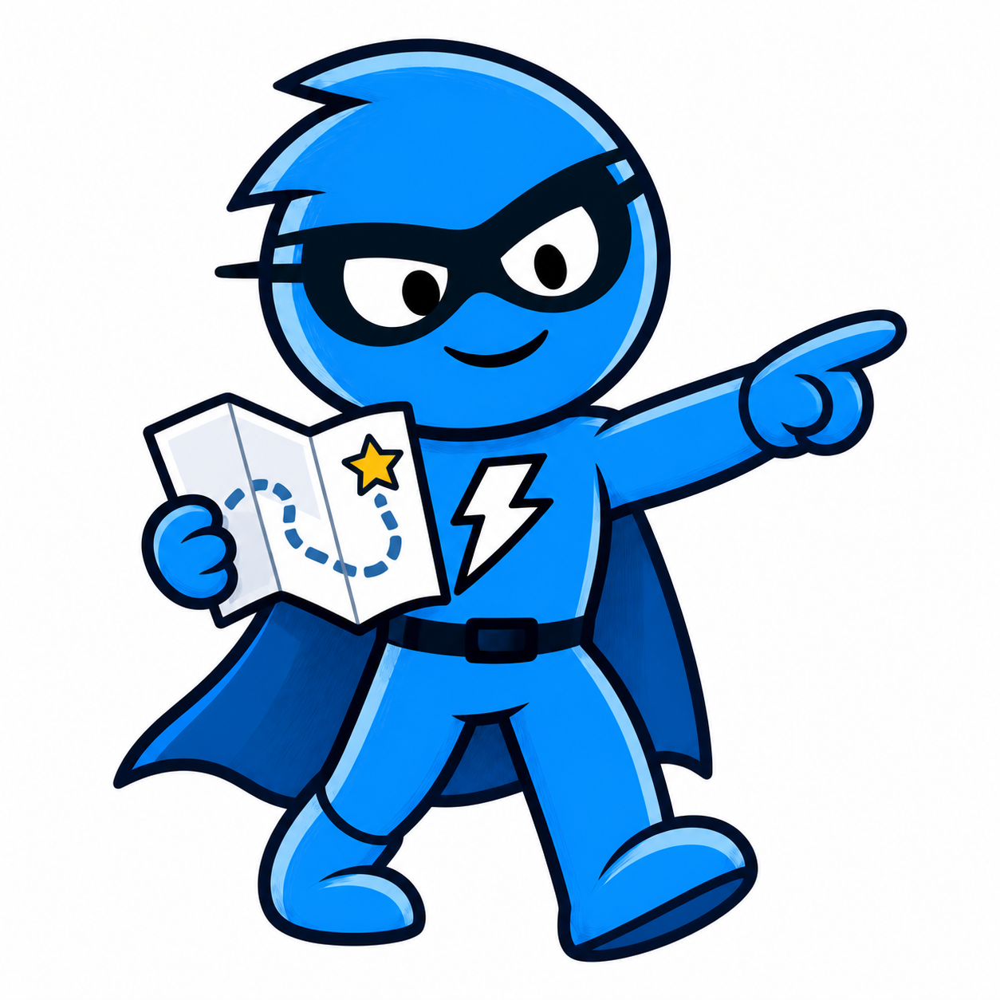
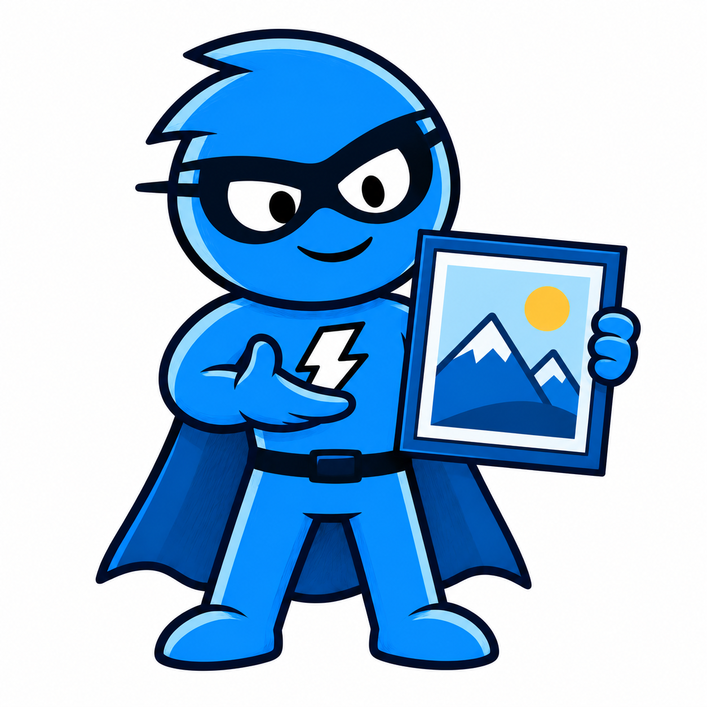

Images & canvas
CoreSave a chart, dashboard or component as an image. Use canvas output as a WebGL texture.
Browser capture engine · zero dependencies
SnapDOM captures rendered HTML in your browser. Save it as an image, or add a plugin for PDF, HTML, recordings or agent context.

Subject: Mr. SnapDOM AF · locked Live DOM: not a screenshot Fig. 01: moments before captureStart with the result you need. The tag tells you whether it ships with the core or needs a plugin.
Save a chart, dashboard or component as an image. Use canvas output as a WebGL texture.
Turn an HTML report or invoice into a searchable document with page breaks and bookmarks.
Save the rendered markup with its styles and resources. Reopen it without rebuilding your app.
Record the live element over time for short animations, demos and review clips.
Give an agent the captured text, form state and locations of interactive elements.
Turn captured text and supported shapes into editable SVG artwork or Figma content.
SnapDOM captures the interface. Plugins prepare or export that capture. Separate tools compare results or operate a browser.
An element, component, report or dashboard with its CSS and resources.
Styles, fonts, images, layout and control values.
Each area has its own colour. The same colour marks it in the sidebar, on its live demo and in its page titles.

21 live demos
Run SnapDOM against canvas, video, fonts, masks, transforms, Shadow DOM, iframes and plugin exporters. Every example uses the real library.
Open the showcase